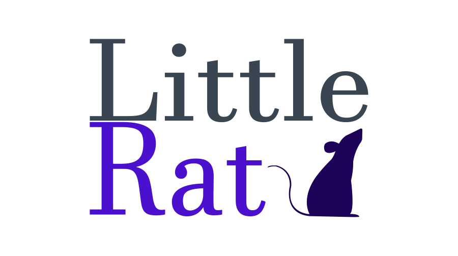
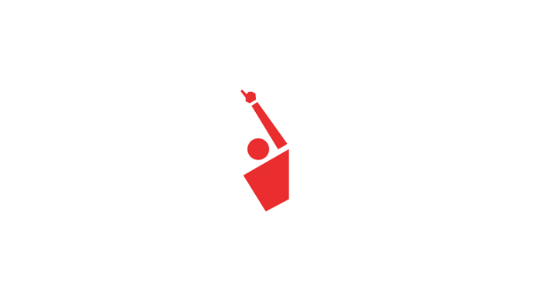

Little Rat
Little Rat is a Java application I made in 2017.
It maps each of 100,000 English words to the word which sounds
most similar to it. "Most similar" is defined by a scoring
system and the same global alignment algorithm used to
compare sequences of DNA. Little Rat includes a GUI
to test its word mappings.
Github Repo

Swapper
Swapper is an action game I made in 2016. It is written in Racket,
a functional programming language based on Scheme. There are two
types of enemies and the player can swap one type with the other
at will.
Github Repo
Automated Trading
In 2015 I made a Java application that executes an option
trading strategy through Interactive Brokers' TWS.
The application collects market data, makes trading
decisions, places orders, and saves statistics on
risk exposure and trading costs.
Github Repo
